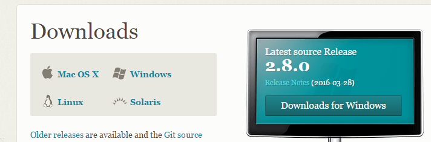

Version Control: Install Git
Git is version control software. It helps us keep track of different versions of our code and lets us collaborate with other developers on a project.
Download Git:https://git-scm.com/downloads. Click on the icon that represents your operating system

This takes you to a new page and should automatically start downloading the newest version of the software. Although they offer 32-bit and 64-bit options, you should be able to take the one they suggest as a default.
Navigate to your Downloads folder and find the Git download. Click to open it and allow it to make changes to your computer.
It will guide you through several screens. You can accept the suggested selections.
The last step is to configure Git so that you can use it with GitHub later
Open Git Bash. The
$is your prompt.At the prompt set your user name by running the command
git config --global user.name "Your Name"replacing the textYour Namewith your own first and last name, keeping the quotation marks.Next, set your user email addres by running the command
git config --global user.email youremail@example.comreplacingyouremail@example.comwith your own actual email address.
OPTIONAL: Now that Git is installed, you could add it to your Start menu and taskbar to make it easier to find.
Navigate to where the program was installed. Check here first:
C:\Program Files \(x86\)\GitOpen the Git folder and right-click on the Git Bash icon. Look for the "pin to start" and "pin to taskbar" options. These will make it easy to get to when you want to use it.